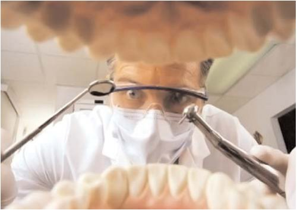
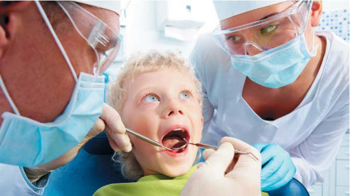
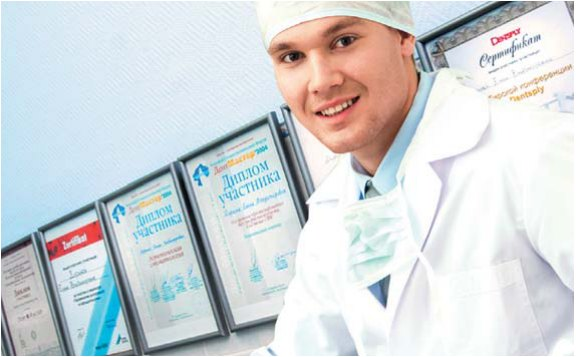
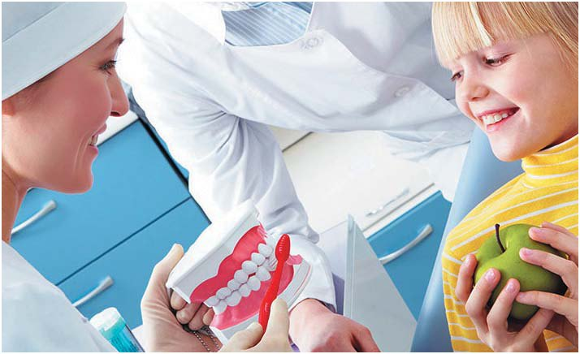
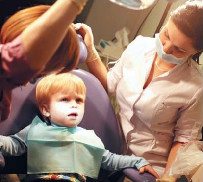

Своя справа · журнал «ДентАрт» 2013 №3 (72)
Типи стоматологів
TYPES OF DENTISTS
У медицині головні ліки — сам лікар.
А. Кемпинський (1918-1972), польський психіатр і психолог
Опис типів представників конкретної професії корисний з двох точок зору. По-перше, з'являється можливість критично оцінити досягнення і стилі поведінки фахівців, що склалися. По-друге, самі професіонали, знайомлячись з пропонованими типажами, одержують можливість знайти у своїй діяльності ті чи інші типові ознаки і мотивувати себе на усунення негативних якостей. Щоправда, це можливе при достатньому рівні зрілості особистості фахівця і настанови на самовдосконалення.
Пропонуємо такі критерії для опису ймовірних типів стоматологів:
- професійна майстерність
- творчі засади
- професійна відповідальність
- амбіції
- мовна активність
- стиль спілкування
- участь у ринкових стосунках зі споживачами послуг
Варіанти професіоналізму
Новий лікар не зміг знайти підходу до хлопчика, після лікування він пішов з істерикою, немає такої радості від лікування, як у Ірини Валеріївни.
Відгук по зворотному телефонному зв'язку
Типи «майстерності»
«Справжній професіонал». Швидко приймає продумані рішення залежно від ситуації: враховує різні клінічні чинники, особливості особистості дитини і осіб супроводу. Свої дії аргументує з розрахунку на пацієнта, обговорює і погоджує з батьками план лікування, вартість і гарантії, враховує їхні побажання і фінансові можливості.
«Мануальник». Добре оволодів лікувальними технологіями і маніпуляціями, домагається ефективних результатів лікування. Вважає, що цього цілком достатньо, щоб бути професіоналом. Гордиться досягнутою якістю лікування. Спілкування з пацієнтами зведене до мінімуму: вислуховування скарг, пояснення порушень в порожнині рота, озвучування наміченого до виконання плану лікування. «Мануальник» заперечує важливість спілкування з пацієнтом і орієнтацію на його психологічні особливості. Нерідко повторює: «Моя справа — лікувати, а не розмовляти».
Деяким пацієнтам подобається такий майстер: лікує добре, решта не має значення. Проте сучасний пацієнт, який очікує пояснень, узгоджень і роз'яснень, стилю «мануальника» не сприймає.
«Сумнівний професіонал». Лікар вагається, ухвалюючи рішення, йому складно сформулювати діагноз, дає батькам розпливчасті пояснення, покладає на них вибір варіанту лікування дитини, уникає відповідей на запитання. Невпевненість стоматолога передається дитині і батькам, і вони починають тривожитися.
«Поганий професіонал». У його роботі багато браку, переробок, пацієнти часто скаржаться на низьку якість робіт. Об'єктивний показник низького рівня професіоналізму — мало записів до лікаря: після консультації більшість пацієнтів не залишаються на лікування.

Типи «творчості»
Ця типологія будується з урахуванням творчого характеру медичної діяльності, адже в ній є місце ініціативам і пошуку нового.
«Лікар-дослідник». Схильний випробовувати нові підходи, узагальнювати власний досвід, цікавитися роботою колег.
«Лікар — активний інноватор». З власної ініціативи навчається новим лікувальним технологіям і методам взаємодії з дітьми та їхніми батьками.
«Лікар — пасивний інноватор». Проходить планові переатестації і програми підвищення кваліфікації, власної ініціативи в пізнанні нового не виявляє, нові знання освоює без особливого інтересу, швидко забуває навіть дуже корисні рекомендації і, як правило, залишається на колишньому професійному рівні. Підвищувати кваліфікацію і застосовувати на практиці нове йому заважає націленість тільки на отримання сертифіката: головне — «папірець», що підтверджує відбування чергового планового підвищення кваліфікації.
Типи «професійної відповідальності»
«Педант». Педантизм обумовлений психологічним складом особи: плановані, здійснювані і завершені дії піддаються багаторазовій перевірці на відповідність належному — нормам, вимогам. Самоконтроль у педанта — нав'язливий стан, який може заважати продуктивній діяльності, швидкому ухваленню рішень і творчому підходу до ситуації. Педант скрупульозний у всьому, його свідомість багаторазово прокручує обставини і особливо досягнуті результати. З педантом важко працювати колегам, оскільки він прискіпливий до всіх і в усьому. Проте педантичний лікар влаштовує багатьох пацієнтів, передусім тих, хто відповідально ставиться до свого здоров'я і висуває підвищені вимоги до особистості фахівця.
Слід визнати, що умови комерції виштовхують педантів за межі корпоративної культури, яка націлює співробітників на підвищення пропускної спроможності кабінету, швидкі заробітки і поверхову взаємодію з пацієнтами. Педант несумісний з керованою системою, де панує хаос, допускаються відступи від стандартів і даються суперечливі вказівки. У такій атмосфері педант постійно схильний до стресу. Ось чому серед стоматологів тип лікаря-педанта зустрічається рідко, але теоретично про нього слід згадати.
«Відповідальний». Лікар характеризується раціональним, підвищеним почуттям відповідальності та обов'язковості. Ним рухає почуття обов'язку, він у всьому намагається дотримуватися встановленого порядку, ретельно дотримується протоколів лікування, технологічних вказівок щодо застосування методик і матеріалів.
Висока відповідальність характеризує взаємодію лікаря з пацієнтами: неухильно виконуються обіцянки, які даються дітям і батькам (подзвонити, нагадати, запросити, підготувати до чергового прийому зліпки, знайти знімки і т. д.). Ведення медичної документації вирізняється акуратністю, дотриманням вимог Мінохоронздоров'я і керівництва клініки.

«Необов'язковий». З таким стоматологом у керівників клініки, адміністраторів і пацієнтів періодично виникають конфлікти. Пообіцяти і не виконати обіцянку, забути про належне, підвести партнера — такі основні характеристики необов'язкового стоматолога. Йому слід про все нагадувати, повторювати вимоги, від нього потрібно вимагати дотримання виконавської і трудової дисципліни.
Необов'язковість стоматолога — дуже стійка тема рекламацій, які формулюються одноманітно: «лікар не підготував до чергового прийому знімки, зліпки», «стоматолог пообіцяв поговорити з керівництвом клініки про те, щоб нам зробили знижки, які не були надані, але нічого не зробив».
Типи претензійності
«Самокритичний лікар» цілком адекватно оцінює себе як фахівця. Бачить свої сильні і слабкі сторони, намагається подолати недоліки, вчиться у досвідченіших колег. Реалістична самооцінка торкається не лише мануальних навичок, але й взаємодії з дітьми та батьками. Самокритичність фахівця — свідчення упевненості в собі і відсутності ознак емоційного вигорання. За нашими спостереженнями, такий тип лікаря зустрічається рідко.
«Самовпевнений лікар». Вважає, що все знає і уміє, все добре зробить. Психологічні особливості такого стоматолога: обмеженість професійних знань, поверховість мислення, нездатність усебічно аналізувати ситуацію, знижена професійна відповідальність і завищений рівень домагань, обмежена самокритичність і яскраво виражена нетерпимість до критики досвідченіших колег і пацієнтів. Самовпевнений лікар не звертає уваги на те, що розповідає пацієнт: про що йому говорив інший лікар, яке лікування вже проводилося, якими соматичними захворюваннями страждає. Наслідок самовпевненості — професійна глухота. Самовпевнений лікар переоцінює свої можливості, тому не завжди радиться з колегами, ставлячи діагноз і обираючи варіант лікування. Результат — часті професійні помилки і рекламації пацієнтів. У відгуках по зворотному телефонному зв'язку час від часу зустрічаються такі скарги: «Лікарі однієї і тієї ж клініки поставили різний діагноз. Чому вони не можуть дійти єдиної думки»?
«Один лікар порадив видалити зуб у дитини і послав до хірурга, а той сказав, що зуб можна лікувати. Ми повірили хірургові і витратили гроші даремно — зуб довелося видаляти. Невже лікарі не могли узгодити свої рішення?»
«Амбітний стоматолог» страждає «зоряною хворобою», чваниться своїми знаннями і уміннями (іноді безпідставно), протиставляє себе колегам. Як правило, амбітний лікар бере до уваги свої мануальні здібності та ігнорує інший важливий аспект майстерності — мистецтво спілкування з дітьми та особами супроводу. В результаті у взаємодії з ними виявляє зарозумілість і безтактність.
Необґрунтована самооцінка зазвичай виникає під впливом кількох чинників. Це низька самокритичність; ігнорування недоліків у своїй професійній діяльності; слабкий контроль за результатами роботи стоматолога з боку головного лікаря і начмеда; відсутність внутрішньої атестації кадрів і присвоєння категорій; незнання думок пацієнтів про результати лікування.
Якщо в клініці діє зворотний зв'язок з пролікованими пацієнтами, то з'являється можливість виявити недоліки в роботі лікаря, який страждає «зоряністю». Відгуки пацієнтів показують його реальні досягнення, у тому числі дискомфорт після лікування, погані результати виконання замовлень, проблемні зони обов'язкового професійного спілкування в аспектах «виявлення», «пояснення», «узгодження», «роз'яснення», недоліки у взаємодії з дітьми і особами супроводу.
Відсутність постійного зворотного зв'язку з пацієнтами — одна з причин виникнення амбітності та «зоряної хвороби».

«Ринкова типологія»
Робота в комерційній клініці майже завжди накладає відбиток на особистість лікаря. У результаті формуються типи, які тією чи іншою мірою відображають ринкові стосунки у схемі «продавець — покупець». Свідомістю і поведінкою деяких стоматологів керують такі умонастрої: час — гроші, потрібно виконати фінансовий план, хочеться більше заробити, треба економити час за рахунок скорочення взаємодії з дитиною і особами супроводу. Рекламації, що отримуються по зворотному зв'язку, підтверджують наявність подібних ринкових умонастроїв. Розглянемо і прокоментуємо приклад:
«Прийшли в клініку з донькою 13 років. Потрібне було лікування маленького карієсу. В результаті зуб розкололи, поставили коронку. Не було пропозицій хоча б дати знижку на це лікування».
Коментар. По-перше, беручись до лікування «маленького» карієсу, лікар мав попередити маму про те, що після препарування зуба може виявитися велика порожнина. Очевидно, стоматолог не став «лякати» її неприємним прогнозом або недооцінив клінічну ситуацію.
По-друге, у будь-якому випадку він міг би зробити знижку при оплаті лікування. Адже у матері залишилося враження, що лікар припустився помилки: «зуб розкололи». Проте альтруїзм у свідомості стоматолога «не спрацював», гору взяв звичайний грошовий розрахунок.
Спостереження за роботою клінік, а також рекламації, що отримуються від пацієнтів по зворотному зв'язку (телефонні опитування, відгуки в Інтернеті), свідчать про появу типології стоматологів, в основі якої ідеологія ринку. Типи лікарів варіюються від «відвертого прагматика» до «альтруїста», який не підпав під вплив золотого тільця.
«Лікар — відвертий прагматик». На першому місці у нього прагнення більше і швидше заробити. Ніхто прямо в цьому не зізнається, але є непрямі докази: зловживання премедикацією, щоб не клопотатися з дитиною; мінімум взаємодії з нею, мало узгоджень з батьками; поспіх у роботі.
«Лікар — помірний прагматик». Якщо це дитячий стоматолог, то він орієнтований на споживчу компетенцію батьків, оскільки вони платять гроші. Батько чи мати отримає те, чого чекає, просить і вимагає: більш чи менш повний план лікування, детальну чи коротку інформацію про послугу, аргументоване побіжне узгодження вартості і гарантій. Помірний прагматик врахує також, яке поводження з дитиною хотів би побачити замовник: ласкаве чи жорстке, тривале чи стисле в часі, з елементами настанов і навчання чи без цього.
«Послужливий лікар». Його основне «завдання» — догодити і сподобатися батькам стилем спілкування з ними і з дитиною. У хід ідуть підлабузнювання, підлесливість, сюсюкання, демонструється обожнювання, захоплення, захват. Якщо послужливий стоматолог влучає в точку, знаходить свого глядача, то з'являється шанс повністю здійснити запропонований план лікування і мотивувати батьків до ролі дистриб'юторів, котрі добровільно поширюватимуть інформацію про чудового стоматолога. Батько чи мати приводить на лікування інших членів сім'ї і знайомих.
«Лікар-альтруїст». Найменше заклопотаний заробітком і тим, щоб сподобатися батькам. Головне — добре пролікувати дитину. Решта прийде як нагорода: вдячність і збільшення потоку пацієнтів. Ринкова метушня не торкнулася менталітету альтруїста, він відданий професії і любить дітей.
Варіанти комунікативності
Хто сам до всіх лицем, до того і добрі люди не спиною.
Російське прислів'я
Тип «мовної активності»
Лікарі з високим рівнем мовної активності. Характеризуються прагненням активно встановлювати контакти з дитиною і особами супроводу, пояснювати клінічну ситуацію, погоджувати з батьками свої наміри, давати пояснення до виконуваних маніпуляцій. Такі фахівці зазвичай долають тривожність, боязнь і страхи у дітей та викликають прихильність їхніх батьків.
Кількість спілкування стоматолога переходить в якість стосунків з дитиною і особами супроводу.
Лікарі із середнім рівнем мовної активності. Використовують вербальну комунікацію економно: задають дитині обмежений перелік запитань для встановлення контактів, повідомляють батькам мінімум необхідної інформації про план і умови лікування.
Лікарі зі зниженим рівнем мовного спілкування. Використовують мінімум слів. Їхнє «мовчання» може викликатися різними причинами: установкою «моя справа лікувати, а не розмовляти», емоційним вигоранням, дефіцитом вербального інтелекту, відсутністю чадолюбства, аутизмом і невдалим вибором професії (потрібно було займатися такою справою, де спілкуватися з іншими людьми не вимагається).
Будь-який тип «мовної активності» може супроводжуватися як позитивними, так і негативними чинниками: занадто квапливий або повільний темп мови, приємний або неприємний тембр голосу, короткі або дуже довгі складнопідрядні речення, відсутність або велика кількість елементів засміченої мови. Погано контролюючи себе, лікар використовує професійні поняття і терміни, сенс яких дитині незрозумілий.
Критеріями мовної активності дитячого стоматолога є:
- виклад пацієнтові і батькам необхідної і достатньої інформації про плановане лікування;
- кількість запитань, звернутих до дитини і батьків, за допомогою яких виявляються передумови ефективного лікування — скарги і побажання, соматичні захворювання, режим дня, інтереси та звички і т.д.;
- культура мовлення.


Стилі спілкування
Позитивний стиль. Включає похвалу, компліменти, терпляче пояснення дитині.
Стиль загравання. Складається з комбінації таких способів встановлення контактів: сюсюкання, тобто зловживання словами зі зменшувальними суфіксами; нещирі посмішки; «солодкий» голос, надмірні похвали; подарунки авансом. Як правило, загравання відразу змінюється різкістю і роздратуванням, коли дитина продовжує поводитися негативно або коли батько виявляється наполегливим, вимогливим, прискіпливим, ставить багато запитань. Виявляється, грайливість лікаря маскувала його справжню круту вдачу. Якщо уважно поспостерігати за тим чи іншим фахівцем, що сюсюкає, то за лакейством легко вгадується недоброзичливість.
В глибині ясних очей можна розгледіти дрібні камінчики за пазухою.
Г. Малкін, афорист.
Негативний стиль. Ґрунтується на погрозах, настрашуванні, залякуванні.
У типології, що її запропонувала Є. Г. Кисельова, поєднуються дві основи — рівень мовної активності лікаря і стиль його спілкування з дитиною на прийомі:
- Лікарі із середнім рівнем мовної активності, котрі часто застосовують психологічну підтримку (в основному похвалу, компліменти, пояснення), використовують позитивний стиль спілкування (40%).
- Лікарі із середнім рівнем мовної активності, котрі поперемінно використовують негативні стимули (докори, негативні порівняння і прогнози) та позитивні форми спілкування — стиль батога і пряника (17%).
- Мовчазні лікарі, котрі використовують тільки найнеобхідніші для взаємодії з пацієнтом слова без емоційного забарвлення, демонструють стиль «мовчазної майстерності» (16%).
- Лікарі, котрі використовують негативні приклади, залякування, командний тон, застосовують негативний стиль (27%).
На думку авторів цієї типології, виділені типи взаємовідносин лікарів з дітьми можуть бути етапами професійного вигорання.
Директивний (авторитарний, домінантний) стиль характеризується прагненням усе контролювати, жорстко управляти ситуацією і людьми.
Директивний стиль поведінки свідчить про те, що людина «зациклилася» на порядку. Та це не означає, що вона сама в усіх ситуаціях дотримуватиметься встановлених вимог. Регламентується порядок передусім для інших, а не для себе.
Такий стиль поведінки властивий особам категоричним, жорстким, з консервативним мисленням і зниженою самокритичністю. Домагаючись порядку, вони не зважають на бажання і можливості тих, хто повинен виконувати їхні вказівки. Лікар дає вказівки дитині і батькам, як їм поводитися в кабінеті, що робити і чого не робити, стежить за виконанням своїх розпоряджень. У нього склалося суб'єктивне уявлення про те, як має відбуватися лікування, і він намагається втілити його в життя у спілкуванні з кожним пацієнтом. Таким ставленням він пригнічує ініціативу оточення, бажання спілкуватися, висловлювати думку.
Взаємодія з пацієнтами будується одноманітно, за відпрацьованою схемою: питання про скарги; розмова з батьками про те, що вони хочуть лікувати у дитини; проведення анестезії і маніпуляцій, мінімум спілкування. Батьки сприймаються як замовники. Від дітей такий лікар очікує зразкової поведінки і негайної слухняності. Вказівки зазвичай знеособлені: заходимо, сідаємо, відкриваємо рот, сплюнули, закрий рота, встали, йдемо до виходу!
Клієнти скаржаться на «директивних» стоматологів: лікар не чує, про що його просиш і що йому говориш; робить, як вважає потрібним; не погоджує вартість лікування; не звертає уваги на скарги, що стосуються загального здоров'я. Спілкування з дитиною і батьками здійснюється у формі коротких команд. Директивний тип спілкування панує в державних поліклініках і нема-нема та й зустрінеться у приватній стоматології.
«Зустріч з лікарем для пацієнта державної клініки, — цитую Є. Г. Кисельову, — своєрідна лотерея. Ось приклад вибору не дуже щасливого білета:
Лікар зустрічає дитину: «Будеш сідати чи ні? Не будеш, підеш додому! Зуб болів? Татусю, ви краще в коридор вийдіть!»
Патерналістський (батьківський) стиль. За формою мало чим відрізняється від директивного, різниця в мотивах, якими керується стоматолог. Директивний стиль диктується неухильним дотриманням порядку, який по-своєму розуміє лікар. Патерналізм продиктований «батьківською турботою», лікар діє за принципом «Я поганого не пораджу». Такий внутрішній настрій дає підставу стоматологові напучувати, повчати, не витрачати час на пояснення і узгодження. «Слухайте і робіть те, що я кажу», — ось підтекст взаємодії стоматолога з дитиною і особами супроводу. З дитиною розбалакувати особливо ні про що, а батьки повинні підкорятися логіці, вказівкам і рішенням лікаря, який нібито піклується про інтереси дитини. При цьому лікар зазвичай діє без зворотного зв'язку, тобто його не цікавить, що думає, що могла б сказати дитина, які побажання батьків. Стоматолог сам знає, як потрібно чинити.
Наслідки патерналізму демонструють рекламації, в яких батьки повідомляють: «З нами лікар не порадився про те, що має намір робити», «вартість не узгодив», «про гарантії не розповів», «був категоричний» і т. п. На думку Є. Г. Кисельової і Д. А. Кузьміної, патерналістська модель стосунків лікаря-стоматолога і пацієнта-дитини в стоматології дитячого віку видозмінюється у бік її послаблення, залишаючи у минулому «директивний стиль» взаємовідносин з пацієнтами і «стиль мовчазної майстерності».
Конвенційний стиль. Стоматолог прагне досягти згоди в усіх аспектах лікувального процесу. Його цікавлять думки і побажання батьків щодо рекомендованого і виконуваного плану лікування, послідовності і обсягу процедур. Це не означає, що лікар іде на повідку у замовника. З'ясування його думок і побажань — це лише відправна точка для визначення подальшої стратегії взаємодії: чи потрібно в чомусь переконувати, на чомусь наполягати, в чомусь просвіщати.
Спостерігаючи стосунки лікаря з батьками останніми роками, Є. Г. Кисельова і Д. А. Кузьміна констатують, що намічаються зміни у бік конвенційних взаємовідносин, спрямованих на отримання інформованої згоди батьків на лікувальні та профілактичні процедури і застосування маркерів гуманізму та професіоналізму в роботі лікаря.
Література
- Бойко В.В. Психология и менеджмент в стоматологии. Том I. Клиника — «под ключ». СПБ, 2009. 1008 с.; Психология и менеджмент в стоматологии. Том VI. Врач – ребенок – родитель. СПБ, 2012. 480 с.; Психология и менеджмент в стоматологии. Том VII. Сервис - детям. CПБ, 2012. 200 с.
- Киселева Е. Г., Кузьмина Д. А. Профессионально-коммуникативная модель взаимоотношений стоматолога и пациента-ребенка.// Экономика и Менеджмент в стоматологии. —2005. —№1(15).